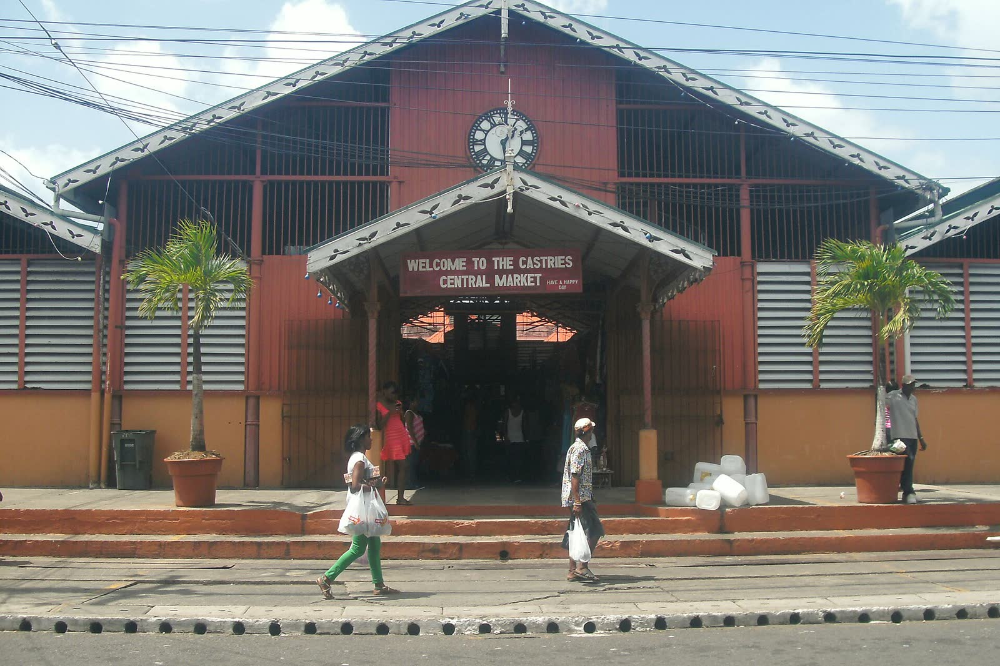

Give & get involved
Tell us what you can give. We will do the rest.
Pick what you have. We reply on WhatsApp, usually the same day.
What would you like to give?
Choose one or more. The message to Earl writes itself.
Pick something above to see what helps most.
Give an afternoon. Volunteer.
Caribaid is run entirely by volunteers. These are the hands we need most.
Cooks
Help prepare meals for the children in the feeding programme.
Mentors
Spend time with boys in the boot camp. Be the steady adult.
Special-aid teachers
Support children who need extra help with reading, numbers or speech.
Fundraisers
Organise a collection at your workplace, church, school or club.
Find us
Jeremie Street, Castries.
- WhatsApp or call
- +1 758 486 0990
- Drop-off
- Jeremie Street, Castries. Please message first so someone is there to receive you.
- Overseas
- Sending a barrel or a parcel? Message us and we will give you the delivery details.

Open in Google MapsCommon questions
What condition should clothes be in?
Clean and wearable: something you would be happy to see your own child in. Baby and children’s sizes are needed most.
Can I give from overseas?
Yes. Many Saint Lucians abroad send barrels or parcels. Message us first and we will tell you where to send them and what is needed that month.
Can my company or church sponsor a child’s daycare place?
Yes. Tell us how many places and for how long, and we will explain how it works and report back to you.
How do I get help for my own child?
Message Earl on WhatsApp or come and see us in Castries. Everything you tell us is kept private.
Photo credits (Wikimedia Commons): Castries harbour by P. Hughes, CC BY 4.0. Soufrière and the Pitons by DavidMPyle, CC BY 4.0. Castries Market from Jeremie Street by Gene93k, CC BY-SA 3.0. Building blocks by Shixart1985, CC BY 2.0. Crayons by Conrad 7, CC0. Lunch box by Hay Kranen, CC0. Coloured pencils by Dietmar Rabich, CC BY-SA 4.0.